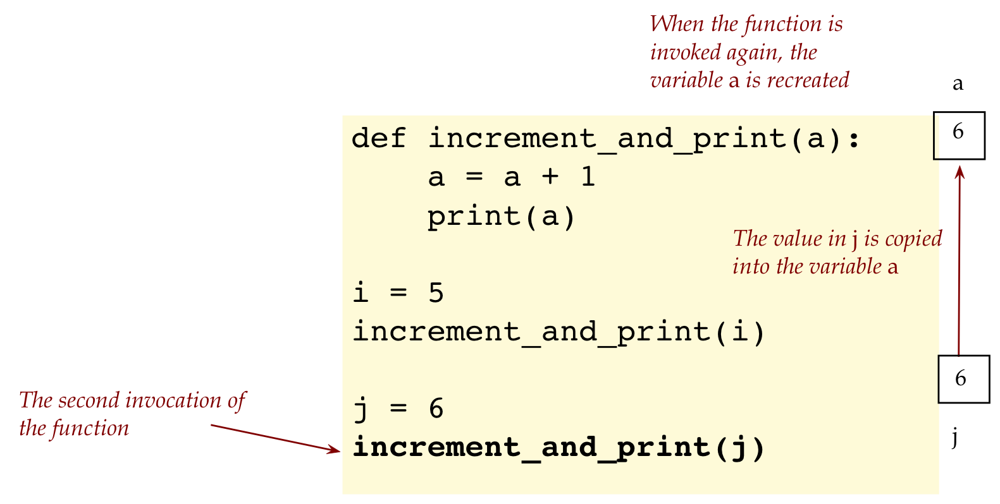

Module 2: Functions
Objectives
By the end of this module you will be able to:
- Enhance your understanding of how to use def to write functions, then invoke them.
- Write code with function definitions and invocations.
- Write and debug code with functions
- Explore the different ways in which parameters work.
- Identify new syntactic elements related to the above.
2.0 Wait, stop!
Before continuing it is essential to review functions as described in Module 2 of Unit-0
What to review most carefully:
- The notion of how execution starts outside a function, goes into a function, and comes back to where the function was invoked.
When we come back to where the function was invoked, we continue execution just after the invocation.
2.1 A simple example
Consider this program:
def increment_and_print(a):
a = a + 1
print(a)
i = 5
increment_and_print(i)
j = 6
increment_and_print(j)Let’s explain:
- Let’s start by distinguishing between a function definition (which merely tells Python what the function is about), and invocation (which asks Python to execute the function at that moment):
- Now let’s peer into what constitutes a definition:
- In the above case, the function
increment_and_printhas only one parameter calleda.In the future, we’ll see that a function can have several parameters, separated by commas.
For example
def increment_and_print(a, b, c):
- Next, let’s examine how execution proceeds, starting with what happens when a function is invoked:
- Once execution is inside the function:
- Next, execution moves further into the second invocation: 
- The code inside the function now executes (again):
Did you notice that neither i nor j was affected by the incrementing of the value of variable a?
- This is because the value in
iwas copied into the newly-created variableawhen the function was invoked. - Even though variable
agot incremented, that did not affecti.
- Variables like
athat appear in the parentheses of a function definition are called parameters.
What does a function do with its parameters?
- Think of the parameters as variables that can be used as regular variables for any purpose.
- For example, consider this program:
def print_from_one_to(a):
print('Printing between 1 and ', a)
for i in range(1, a+1):
print(i)
print_from_one_to(5)
print_from_one_to(6)- Here, we used the parameter
ain setting the upper limit of a for-loop.
When a function is defined with a parameter, the intent is that some code outside the function will set the value of the parameter.
Thus, it would be allowed but technically defeat the purpose to write:
def print_from_one_to(a): a = 5 print('Printing between 1 and ', a) for i in range(1, a+1): print(i) print_from_one_to(5) print_from_one_to(6)Yes, this runs, but the whole point is for some other code to tell the function, “Hey, I’m going to set variable
a, and then you do your printing with the value I set”.And so, when we write
def print_from_one_to(a): print('Printing between 1 and ', a) for i in range(1, a+1): print(i) print_from_one_to(5) # We're telling the function that a = 5 print_from_one_to(6) # We're now telling the function to use a = 6
2.4 Video
2.6 Video
2.2 Multiple parameters
Remember Pythagoras? We know his famous result:
A Pythagorean triple is any group of three integers like 3,4,5 where the squares of the first two add up to the square of the third: 32 + 42 = 52.
We’ll now write code to check whether a trio of numbers is indeed a Pythagorean triple:
def check_pythagorean(a, b, c):
if a*a + b*b == c*c:
print('yes')
else:
print('no')
check_pythagorean(3, 4, 5)
check_pythagorean(5, 12, 13)
check_pythagorean(6, 8, 20)This time, we’ve defined a function that takes three parameters:
def check_pythagorean(a, b, c): # The comments here are indented by a tab space. # The function code replaces these comments as shown below.Notice the commas separating the three variables.
Consider the first invocation:
The invocation also uses commas to separate arguments.
2.8 Video
2.3 Return values
So far, we’ve written methods that take values, do things and print.
We get a whole new level of programming power, when methods can compute something and return something to the invoking code.
Here’s an example:
def padd(a, b):
total = 0
if a >= 0:
total += a
if b >= 0:
total += b
return total
x = padd(-5, 6)
print(x)Let’s explain:
First, execution begins after the function definition is “absorbed” by Python:
Remember, in an assignment statement, the right side is executed first:
x = padd(-5, 6)The result of invoking this function somehow results in
xgetting a value stored inside it.
(We’ll see how, shortly.)Next, execution goes into the function:
When the return statement executes, the value returned (the value of
totalgets copied intox)One way to think about it is presented below:
Consider the following function invocation:
x = padd(-5, 6)Then look at the function definition and the code block that is executed under
def padd(a, b):.After the function
padd(-5, 6)is executed, it returns the value in one of its variables (i.e.,total).In this case where the function is
padd(-5, 6), the value6is returned.The value
6is now assigned to the the variablexas shown below.x = 6And thus, the value
6gets copied into the variablex.
2.11 Video
Let’s return to our earlier example and use the padd() function in different ways:
def padd(a, b):
print('Received values: ', a, b)
total = 0
if a >= 0:
total += a
if b >= 0:
total += b
return total
print(padd(-5, 6))
x = padd(padd(-5,6), 7)
print(x)
print(padd(padd(-5,6), padd(5,-6))) Let’s examine each of the last four statements in the program my_func_example7.py:
First, let us look at the following statement in the program
my_func_example7.py:print(padd(-5, 6))In this case, the invocation of the function
padd()occurs inside theprint()statement.The function
padd(-5, 6)executes and returns the value6.Then the
print()statement is executed as shown below with the value6.print( 6 )The value
6is the output of theprint()function.
Next, let us examine the following statement in the program
my_func_example7.py:x = padd(padd(-5,6), 7)In this case, the innermost
padd()function is invoked first, i.e.,padd(-5, 6)inx = padd( padd(-5,6), 7 )The parameter values
5&6are input into the functionpadd(-5, 6).The function
padd(-5, 6)returns the value6, and the statement takes the form as shown below:x = padd( 6, 7 )Now the outermost
padd()function has the value values6&7as its’ parameters.This results in another invocation to
padd()with parameter values6&7i.e.,padd( 6, 7 ).The function
padd( 6, 7 )is executed and it returns the value13.The result is assigned to the variable
xas shown below:x = 13
Finally, consider the last statement in the program
my_func_example7.pyas shown below:print(padd(padd(-5,6), padd(5,-6)))In this case, there are two innermost invocations of the
padd()functions. These arepadd(-5, 6)&padd(5, -6)located inside the outermostpadd()function as shown below:print(padd( padd(-5,6), padd(5,-6) ))In the statement above the first function to be invoked is
padd(-5, 6).The function
padd(-5, 6)returns the value6and the statement takes the following form:print(padd( 6, padd(5,-6) ))Next, the function
padd(5, -6)is invokedThe function
padd(5, -6)returns the value5and the statement takes the following form inside theprint()statement:print(padd( 6, 5 ))Now, the values
6 & 5become the parameters for the third invocation of the functionpadd().This invocation of the function
padd( 6, 5 )returns the value11The
print()statement is now executed with the returned output from the functionpadd( 6, 5 )as shown below:print( 11 )And so 11 gets sent to print, which prints it.
Whew!
2.4 Multiple returns in a function
Take a moment to go back up and quickly glance through the Pythagorean example.
Now consider this rewrite:
def check_pythagorean(a, b, c):
if a*a + b*b == c*c:
print('In the if-part')
return 'yes'
else:
print('In the else-part')
return 'no'
result = check_pythagorean(3, 4, 5)
print(result)
result = check_pythagorean(5, 12, 13)
print(result)
result = check_pythagorean(6, 8, 20)
print(result)- When a function executes a return statement, execution exits the function right then and there, even if there’s more code below.
- Thus for example, in the first time
check_pythagorean()is invoked:
2.16 Video
2.5 Parameter and argument names
Consider this example:
def subtract(a, b):
c = b - a
return c
x = 5
y = 6
z = subtract(x, y)We refer to
aandbas parameters in the definition of the function:def subtract(a, b):When function is invoked as shown below,
subtract(x, y):we use the term function arguments for
xandy.
The names given to parameters have no relation to the names used for arguments:
In the above case:
Consider this variation:
def subtract(a, b): c = b - a return c a = 5 b = 6 c = subtract(a, b)The a,b,c that are the parameter variables are different from the a,b,c variables below:
If you aren’t sure, it’s safest to use different names.
2.6 What can you do with parameter variables?
Generally, the purpose of parameter variables is this:
Consider this example:
def silly_func(a, b): c = 2*a - b print(c) silly_func(3, 4) x = 6 silly_func(x, 8)From the point of view of the definition of the function,
silly_func(a, b)thinks “Someone is going to put values into my variablesaandb, and then I’ll do stuff like calculate and print”.From the point of view of code that is using the function or the invocation of the function,
silly_func(3, 4)is saying “We’ll set the function’s parameterato3, andbparameter to4, and then let the function do its thing”.silly_func(3, 4)- Note that the values
3and4are called the arguments of the invoked-functionsilly_func(3, 4).
- Note that the values
Functions can use its parameter variables just like any other variable and change its value, as in:
def crazy_func(p, q): print(p) p = p + 3*q # We're changing p here print(p) r = p + q print(r) x = 6 y = 7 crazy_func(x, y)Because the value in
xgets copied into the variablep, the value inxdoes not get changed even though the function changes the value inp.
2.7 Functions and lists
Can a function receive a list as parameter? Can it return one? Is this useful? Yes, yes, yes.
Let’s start with a list as parameter:
def compute_total(B):
total = 0
for k in B:
total += k
return total
A = [1, 3, 5, 7]
t = compute_total(A)
print(t)Next, let’s look at an example where a list is returned:
def build_odd_list(n):
L = []
for i in range(0, n):
k = 2*i + 1
L.append(k)
return L
print(build_odd_list(5))Execution begins with
print(build_odd_list(5))This results in:
Once the return occurs, we could think of this as:
print( [1, 3, 5, 7, 9] )This gets sent to print, which prints.
One could make this more explicit:
Next, let’s look at a list example with multiple returns:
def find_first_negative(A):
for k in A:
if k < 0:
# First try print(k) here
return k
# Then try print(k) here
return 0
B = [1, 2, -3, 4, -5, 6]
C = [1, 2, 3, 4]
print(find_first_negative(B))
print(find_first_negative(C))2.8 returns that don’t return anything
Consider this program:
def print_first_negative(A):
for k in A:
if k < 0:
print('Found: ',k)
return
print('No negatives found')
B = [1, 2, -3, 4, -5, 6]
print_first_negative(B)
C = [1, 2, 3, 4]
print_first_negative(C)Let’s point out:
Whenever a
returnstatement is executed in a function, execution exits the function right away.When a
returnstatement does not return a variable’s value, execution leaves the function but does not give a value back to the invoking code.Thus the
returnstatement in the program below, does not return a value but merely causes execution to leave the function and get back to line just after the function was invoked.def print_first_negative(A): for k in A: if k < 0: print('Found: ',k) return print('No negatives found')Although it’s not needed, one could return at the end of a non-value-returning function:
def print_first_negative(A): for k in A: if k < 0: print('Found: ',k) return print('No negatives found') returnWhy do we have multiple return’s in a function? Why not always wait until execution reaches the end of a function?
- It is very useful to be able to return from anywhere in a function’s code.
- The reason is, as soon as the function’s “job” is done (example: finding the first negative), we want to leave the function.
2.9 A fundamental difference between list and basic parameters
Consider this program:
def swapint(a, b):
temp = a
a = b
b = temp
print(a, b)
x = 5
y = 6
swapint(x, y)
print(x, y) # Will this print 5 and 6, or 6 and 5?Let’s explain:
Execution of the program begins with the line
x = 5When the function is called soon after:
swapint(x, y)then execution enters the function with the values in x and y copied into a and b:
Then, by the time we reach the print statement:
Thus, the values in a and b do indeed get swapped.
But this does not affect x and y because they are actually different variables.
Now, consider a similar program with lists:
def swap_list_first(A, B):
temp = A[0]
A[0] = B[0]
B[0] = temp
X = [1, 3, 5, 7]
Y = [2, 4, 6]
swap_list_first(X, Y)
print(X, Y)Let’s see what’s going on:
- List variables are fundamentally different from numeric variables.
- Think of a list variable has having a reference ID to the actual list contents:
- This is like an “address” in memory.
- If you have this “address” you can go to the list and do things with it.
- List variables actual store these addresses (which, interestingly, turn out to be numbers).
- We will draw a conceptual diagram to highlight this point:
- Thus, when the function starts execution, the “references” in X and Y are copied into A and B.
- This means A and B refer to the same list contents.
- So, A[0] is the same as X[0], for example.
- Next, after executing the three lines inside the function but before returning:
- Notice that temp is a regular integer.
The key takeaways:
- When you send number variables to a function, they get copied, and so the function can’t “do” anything to the variables you present as arguments.
- But if you send a list, a function can change the contents.
- This means you need to be careful about intent when writing functions that involve larger entities like lists.
2.10 Calling functions from functions
The code inside functions can be like regular code that’s outside functions.
In particular, code inside functions can call (invoke) other functions.
For example:
def increment(a):
b = a + 1
return b
def increment_twice(c):
d = increment(c)
e = increment(d)
return e
x = 5
y = increment_twice(x)
print(y)The program starts execution at the line
x = 5Then, when
increment_twice(x)is called, we enter the functionincrement_twice()with the variablecset to 5 (copied from x).The next line in there
d = increment(c)results in a call to
increment()with the value 5 copied into parametera.Then, the code in
increment()executes, resulting in 6 being returned.The returned value 6 is stored in
d.Then
increment()is called again with the value ind. (now 6) copied intoa.The code in
increment()executes resulting in 7 returned.Execution continues in the
increment_twice()function and the value 7 is stored ine.Finally
increment_twice()completes execution and returns the value ine, which is 7.This value is stored in
y,Execution continues from there to the print.
In addition, observe the following:
We can shorten the above code by writing:
def increment(a): return a + 1 def increment_twice(c): return increment(increment(c)) x = 5 y = increment_twice(x) print(y)Notice that one can return the result of an expression:
return a + 1In this case, the calculation is an arithmetic expression.
One can also have the result of a function call itself be returned:
def increment_twice(c): return increment(increment(c))After, it’s possible to do this:
print( increment(increment(c)) )Here, the result of the inner
increment()callprint( increment(increment(c)) )is sent again to
increment():print( increment( ... ) )In the same vein, we can, instead of printing, execute a return:
return increment(increment(c))
You do NOT have to use such shortcuts. Some shortcuts are an advanced topic and may in fact make your code harder to read, and harder to fix mistakes in.
2.34 Video
2.11 More stats via programming
Armed with our new ability to work with functions and lists, we will see how easy it is to compute basic statistics with data.
Before we get to that, here’s a small exercise.
With that, consider this partially complete program:
def find_smallest(A):
smallest = A[0]
for k in A:
if k < smallest:
smallest = k
return smallest
def find_largest(A):
# Insert your code here:
def find_span(A):
smallest = find_smallest(A)
largest = find_largest(A)
span = largest - smallest
return span
data = [-2.3, -1.22, 1.6, -10.5, 1.4, 2.5, -3.32, 11.03, 2, 2, -1.4]
print('span: ', find_span(data))2.37 Video
Next, let’s write some (partially complete) code for standard statistics:
import math
def compute_mean(A):
# Insert your code here:
def compute_std(A):
mean = compute_mean(A)
total = 0
for k in A:
total += (k-mean)**2
std = math.sqrt( total / len(A) )
return std
data = [-2.3, -1.22, 1.6, -10.5, 1.4, 2.5, -3.32, 11.03, 2, 2, -1.4]
print('mean =', compute_mean(data))
print('standard deviation =', compute_std(data))- The mean of a list of numbers is the total (add the numbers up) divided by “how many numbers there are” in the list.
- The standard deviation is more involved:
Consider data like:
10, 20, 30, 40, 50This is centered around 30 (mean in this case).
Here, a different set of data that’s also centered around 30:
28, 29, 30, 31, 32Clearly, the second set of data is very bunched up around 30 while the first is more spread out.
The standard deviation is a measure (a single number) that rates the “spreadout-ness” of data.
The more spread out, the higher the standard deviation.
To calculate it, we take the difference of each data from the mean, square it (to make it always positive), then add all of these up.
This gives something called the variance, which itself is a fine measure of spreadout-ness.
However, because we’re adding up squared numbers, the variance can become a big number.
To bring the measure closer to the “level” of the actual data, we take the square root of the variance: this is the standard deviation.
- If you’ve never seen this before, it’s worth computing by hand with the data above, just so you understand how it looks on paper. Then compare with the results from the program.
Next, let’s tackle the more challenging problem of identifying outliers:
Take a closer look at the data:
data = [-2.3, -1.22, 1.6, -10.5, 1.4, 2.5, -3.32, 11.03, 2, 2, -1.4]We see that two data values
-10.5&11.03seem to be far outside the range of the other data.Suppose we use the following approach to identifying outliers:
- Compute the mean and standard deviation.
- Identify those data that lie further than two standard deviations away from the mean.
- Call these outliers.
The traditional definition uses three standard deviations, but we’ll stick with two because it makes our example easy to work with.
Let’s write a function to do this:
def find_outliers(A):
mean = compute_mean(A)
std = compute_std(A)
for k in A:
if k < (mean - 2*std):
print('Found outlier: ', k)
elif k > (mean + 2*std):
print('Found outlier: ', k)2.12 A function that calls itself
This is a somewhat advanced topic (not on any exam or assignment!).
We will only present a simple example only so that you see what it’s like.
Consider the following example:
def factorial(n):
# print(n)
if n == 1:
return 1
else:
m = factorial(n-1)
return n * m
print(factorial(5))
print(factorial(10))Let’s point out:
- Yes, it’s allowed for a function to call itself.
- Such a function is called a recursive function, and the resulting behavior is called recursion.
- The above example computes numbers like 1 × 2 × 3 × 4 × 5 × = 120
(This ascending multiplication is called factorial.) - For recursion to work, the successive calls to itself have to end so that we don’t get the infinity of barbershop mirrors.
- In the above case, n eventually becomes 1. In this case, there’s no further call to itself.
- Recursion is hard to understand, and will be featured in later courses after you’ve got more programming under your belt.
- Surprisingly, many problems are solvable elegantly and efficiently using recursion.
- It is possible to do recursion improperly, in which case a program is set up to recurse forever. In this case, Python will give up after too many recursions.
2.41 Video
2.13 Inscribed geometric figures as art
Of course we’re going to try and use functions and drawing.
Consider this program:
import math
from drawtool import DrawTool
dt = DrawTool()
dt.set_XY_range(-1,1, -1,1)
dt.set_aspect('equal')
def draw_circle_in_square(side):
radius = side/2
dt.set_color('r')
dt.draw_circle(0,0, radius)
return radius
def draw_square_in_circle(radius):
side = math.sqrt(2) * radius
dt.set_color('b')
dt.draw_rectangle(-side/2, -side/2, side, side)
return side
side = 1
dt.draw_rectangle(-side/2, -side/2, side, side)
n = 5
for i in range(n):
radius = draw_circle_in_square(side)
side = draw_square_in_circle(radius)
dt.display()At first, this looks like a simple exercise in geometric art, or a depiction of the “evil eye” but there’s more to it:
- Notice the construction:
- We start with a square.
- Then we inscribe the biggest possible circle that’ll fit inside that square.
- Now we find the biggest possible square that’ll fit inside the recently drawn circle.
- Then the square inscribed in that circle, and so on.
- Instead of just using circles and squares, one can use a square first, then a pentagon, then a hexagon, and so on.
- The result is something that Kepler worked on a long time ago. See this article
- The historical significance is this:
- Ever since the Greeks, polygons and circles have held special significance.
- So, something like this had an almost religious significance.
- Kepler then used a similar idea for solids to expound (an entirely wrong) theory of planetary motion.
- To his credit, he realized he was wrong when shown higher quality data (from Tycho Brahe), and used the data to fit ellipses.
- This was the beginning of the modern understanding of planetary motion, later mathematically solved by Isaac Newton.
2.14 When things go wrong
In each of the exercises below, first try to identify the error just by reading. Then type up the program to confirm, and after that, fix the error.